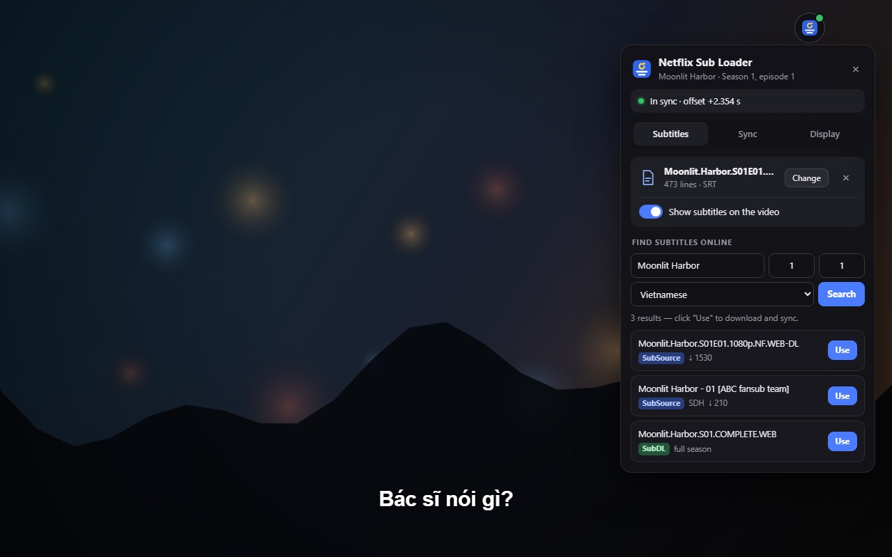
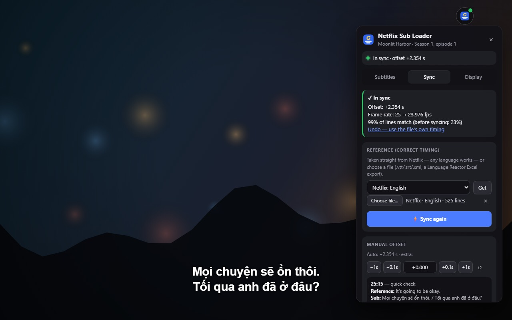
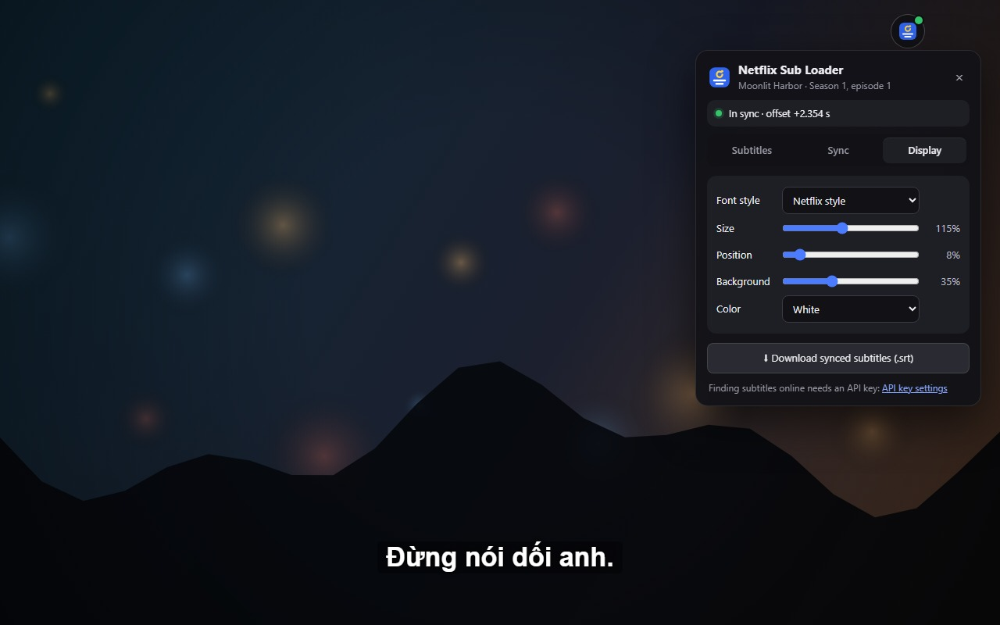

Netflix Sub Loader
Add your own subtitles to Netflix — SRT, ASS, VTT and more, in any language — and get them synced to the video automatically.
Netflix doesn't let you upload subtitle files. Netflix Sub Loader shows them over the video right in your browser, timed to the dialogue, without you having to edit the file.

Everything you need for subtitles on Netflix
Watch with subtitles in a language Netflix doesn't offer (such as Vietnamese), with a translation you like better, with fan subtitles for anime, or with the subtitles you use to learn a language.
Custom subtitles on Netflix
Drag and drop .srt, .ass/.ssa, .vtt, .ttml/.dfxp/.xml, Excel (.xlsx) or .csv/.tsv files.
Automatic subtitle sync
Your file is compared with Netflix's own subtitle track and the delay is fixed for you — including frame-rate differences (25 fps vs 23.976 fps releases) and versions with scenes added or cut. If the file seems to be for a different episode or version, you get a warning.
Find subtitles without leaving Netflix
Search SubSource (home of the old Subscene archive), SubDL and OpenSubtitles for the exact show, season and episode you are watching, in Vietnamese, English, Japanese, Korean, Thai, Indonesian, Spanish or French. One click downloads and syncs; .zip season packs are unpacked and the right episode is picked for you.
Fine-tune by hand
Move subtitles 0.1 s earlier or later with G / H (1 s with Shift) and compare Netflix's line with yours to check the timing.
Jump between subtitle lines
A / D (or Shift+← / Shift+→) replays the previous line or skips to the next one — handy for language learning.
Netflix-style look
Netflix Sans font or a black outline, with adjustable size, position, background and color. Works in fullscreen. Subtitles and sync are remembered for the last 40 episodes, and you can export the synced subtitles as an .srt file.


How to add subtitles to Netflix
It takes a few seconds once the extension is installed.
- Open a movie or episode on Netflix.
- Click the Netflix Sub Loader icon in the Chrome toolbar (or press Alt+Shift+S).
- Drop in a subtitle file, or search online and click “Use”.
- The subtitles appear on the video, already in sync. Change their look in the Display tab.
Install
Requires Google Chrome 111 or later.
Chrome Web Store
Netflix Sub Loader is being reviewed for the Chrome Web Store. The install link will appear here once it is approved.
From GitHub (developer mode)
- Download the source code and unzip it.
- Open
chrome://extensionsand turn on Developer mode. - Click Load unpacked and choose the
chrome-extensionfolder. - Pin the Netflix Sub Loader icon in the toolbar, then open Netflix.
Frequently asked questions
Short answers to what people ask most.
How do I fix subtitles that are out of sync on Netflix?
Load the subtitle file with Netflix Sub Loader. It uses Netflix's own subtitles as the timing reference and works out the correct offset by itself, so there is no delay to guess. G / H nudge the timing by hand if you want.
Can I watch Netflix with subtitles in a language Netflix doesn't have?
Yes. Load a subtitle file in any language and it is shown over the video. The timing reference can be in another language, for example English.
Which subtitle formats are supported?
SRT, WebVTT, ASS/SSA, TTML/DFXP (XML), Excel (.xlsx) and CSV/TSV, plus .zip archives downloaded from subtitle sites. .rar and .7z archives are not supported.
Do I need an account to find subtitles?
Loading your own files needs nothing. Searching online needs a free API key from SubSource, SubDL or OpenSubtitles (one is enough), entered once in the extension's settings.
Does it work with Language Reactor?
Yes. A Language Reactor Excel export can be used as the timing reference, and the A / D shortcuts don't jump twice when both extensions are installed.
Is Netflix Sub Loader free? What data does it collect?
It is free and open source, with no ads and no tracking. Subtitles, settings and API keys stay on your device. A search only sends the title, season and episode to the subtitle sites you added a key for. Details are in the privacy policy.
Phụ đề tiếng Việt cho Netflix
Netflix Sub Loader giúp bạn xem Netflix với phụ đề tiếng Việt hoặc bất kỳ ngôn ngữ nào: chỉ cần thả file .srt, .ass hoặc .vtt vào, phụ đề sẽ hiện trên video và được tự động căn khớp thời gian — không còn cảnh sub bị lệch. Tìm phụ đề tiếng Việt trên SubSource, SubDL và OpenSubtitles ngay trong lúc xem Netflix. Miễn phí, mã nguồn mở, không quảng cáo, không thu thập dữ liệu.
Support the project
Netflix Sub Loader is free and open source. If it helps you, you can support its development.
Help and feedback
Found a bug or have an idea? Open an issue on GitHub. The code is on GitHub under the MIT license.